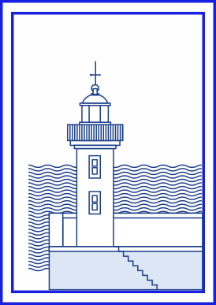

Salutations du
Port d'Erquy
À travers ses ruelles de grès rose, la station balnéaire à taille humaine vous ravira par sa situation privilégiée au pied de son Cap, point de départ idéal de toutes vos balades à pied et à vélo. Au cours de votre escapade, n'oubliez pas de faire un tour aux lacs bleus, vestiges des anciennes carrières de grès rose, lieux secrets et sereins par excellence. Fierté de notre village, notre port de pêche est un des trois ports coquilliers des Côtes d'Armor, et surtout le 4ème port de France en terme de valeur des produits échangés ! Source